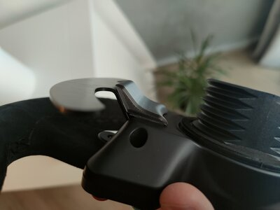

Articles à la une

A Magnetic shifter mod made for most Thrustmaster wheels in the market ! Make sure to choose the correct style for your specific wheels, below are the different organization : - Most TM wheels : T300RS / GTE / TM leather/ Open Wheel TM and more .. - P310/ R383/ Ferrari 488 : Choose this option if your wheel is one of them as the model of the mod is sligthly different. - T-GT / T-GT 2 : A brand new version was made to fit the T-GT and T-GT2 wheels ! ( The cost is slightly more as it requires 4 more magnets, as the paddle is not magnetic. ( If you have doubts make sure to send me a message to ask, some wheels are simply not compatible, such as the older tx version of the thrustmaster wheel ). This mod will greatly improve the feeling of your shifting, compared to the stock mushy shifters, the magnets brings a new sensation, with the added resistance, shifting will feel more crisp and snappy, it will also help with misshift.